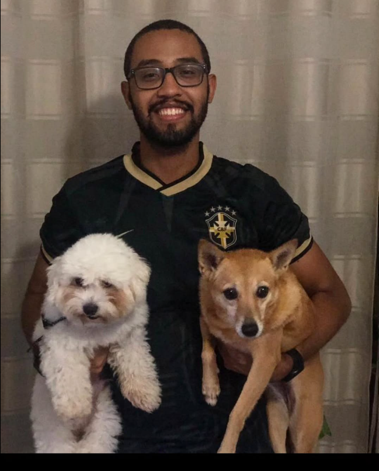

Sobre o Sistema Festa Recife
Equipe Desenvolvedora

Tecnologias utilizadas
-
Frontend:


-
Backend:


-
Banco de dados:


Sobre o projeto
Este projeto foi desenvolvido com foco acadêmico, aplicando boas práticas de desenvolvimento web moderno com frontend separado do backend.